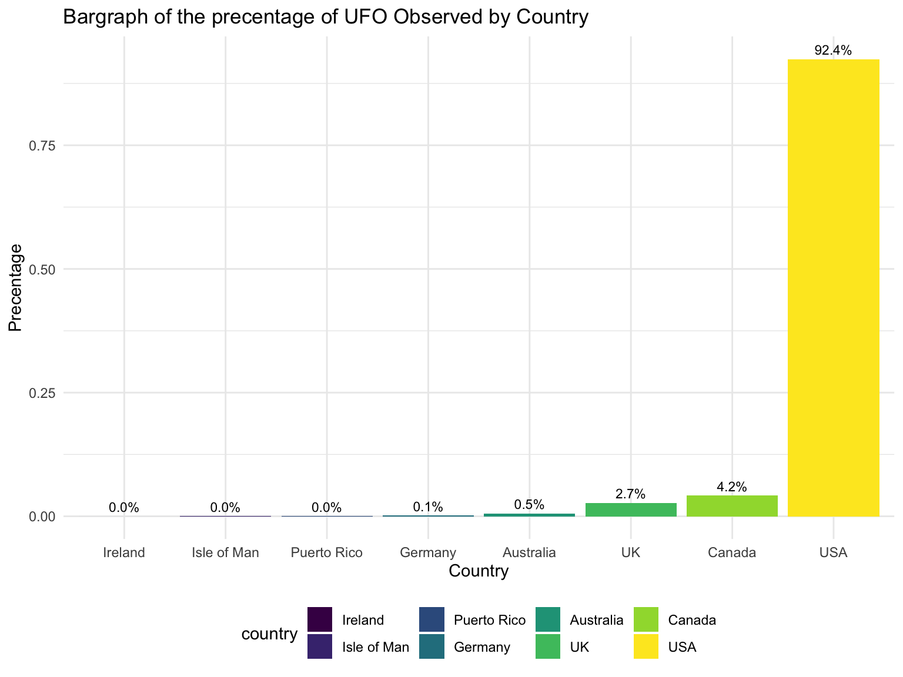
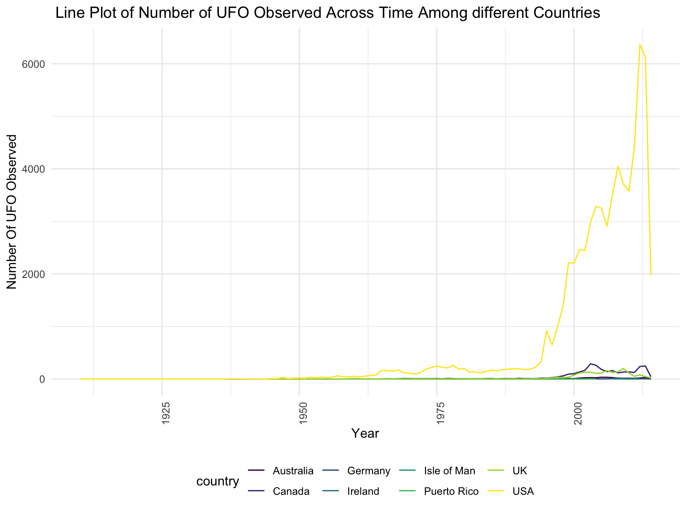
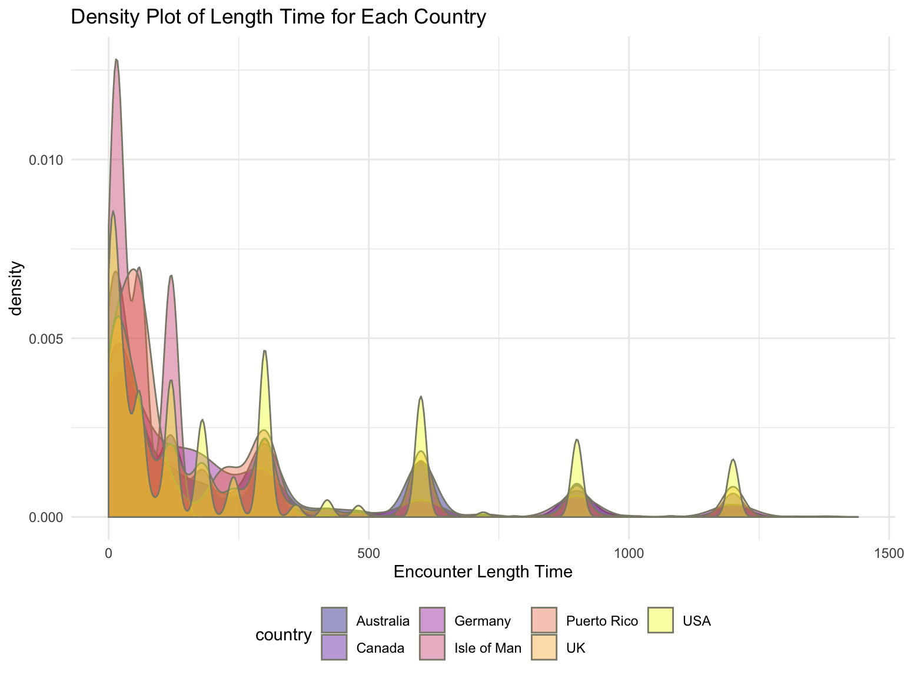
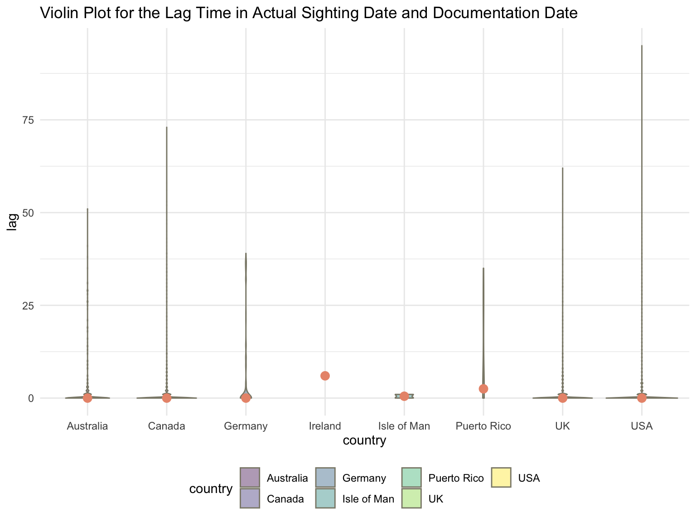

## A bargraph showing the total number of UFO observed among 7 countries.
ufo %>%
group_by(country) %>%
count() %>%
ungroup()%>%
mutate(precentage = n/sum(pull(., n)),
country = factor(country),
country = forcats::fct_reorder(country, n)) %>%
ggplot(aes(x = country, y = precentage , fill = country, label = scales::percent(precentage))) +
geom_col(position = 'dodge') +
geom_text(position = position_dodge(width = .9),
vjust = -0.5, size = 3) +
labs(title = "Bargraph of the precentage of UFO Observed by Country",
x = "Country",y = "Precentage") 
According to the graph above, the majority of the UFO were observed in the USA with very small number of data came from Canada and UK. We can almost ignore data from Ireland, Germany, Isle of Man and Puerto Rico.
## line plot showing the number of UFO observed across time among countries
ufo %>%
group_by(year) %>%
count(country) %>%
ungroup() %>%
mutate(year = as.numeric(year)) %>%
ggplot(aes(x = year,y = n,group = country)) +
geom_line(aes(color = country)) +
theme(axis.text.x = element_text(angle = 90)) +
labs(
title = " Line Plot of Number of UFO Observed Across Time Among different Countries ",
x = "Year",
y = "Number Of UFO Observed"
)
This line plot provides a trend showing the number of UFO observed in each country across time. It is obvious that USA gives the most number of data.we can see that for the United States, the earliest data happens before 1925. The amount of UFO sighting begins to increase sometime after 1950. Most of UFO sighting reports were taken place around 1990 and after. Similar trend was also observed in Canada and Australia, but with far less amount of data recorded.
ufo %>%
group_by(country) %>%
# create columns for count, mean, median, sd, Q1, Q3, IQR for each country
summarize(count = n(),
mean = mean(encounter_length),
median = median(encounter_length),
sd = sd(encounter_length),
Q1 = quantile(encounter_length, 0.25),
Q3 = quantile(encounter_length, 0.75),
IQR = IQR(encounter_length)) %>%
# arrange according to mean for each group
arrange(desc(mean)) %>%
# knit a table
knitr::kable(digits = 2,
caption = "The mean, median, sd, Q1, Q3 and IQR are for the variable lenght time (in seconds). ")| country | count | mean | median | sd | Q1 | Q3 | IQR |
|---|---|---|---|---|---|---|---|
| UK | 1892 | 66512.89 | 180 | 2322650.19 | 30.0 | 600 | 570.0 |
| Canada | 2979 | 29053.86 | 120 | 1517051.49 | 20.0 | 600 | 580.0 |
| Germany | 103 | 24715.27 | 180 | 187783.67 | 30.0 | 600 | 570.0 |
| USA | 65531 | 5801.26 | 180 | 403249.64 | 30.0 | 600 | 570.0 |
| Australia | 387 | 3823.99 | 180 | 61480.63 | 30.0 | 600 | 570.0 |
| Puerto Rico | 24 | 1056.67 | 60 | 3655.46 | 52.5 | 300 | 247.5 |
| Ireland | 1 | 60.00 | 60 | NA | 60.0 | 60 | 0.0 |
| Isle of Man | 4 | 52.50 | 40 | 49.92 | 17.5 | 75 | 57.5 |
With relative small number of observations in Ireland, Germany, Isle of Man, Australia and Puerto Rico, the rest of analysis will mostly focus on USA. Since the standard deviations of the United States and Canada are way too large for a “readable” display, extreme values will be omitted for the later density plot.
# create dataframe for the plot (which got rid of outliers for each country)
filtered_ufo = ufo %>%
group_by(country) %>%
# add two columns according to its country: Q3, IQR
mutate(
Q3 = quantile(encounter_length, 0.75),
IQR = IQR(encounter_length)
) %>%
# ungroup
ungroup() %>%
# filter out outliers
filter(encounter_length < Q3 + 1.5 * IQR)
# make a density plot
filtered_ufo %>%
# make x-aixs = encounter_length, fill the color by country
ggplot(aes(x = encounter_length, fill = country)) +
# set the transparency to 0.4 and set several customerized parameter
geom_density(alpha = 0.4, adjust = 0.5, color = "cornsilk4") +
# to make the fill colors a bit prettier
scale_fill_viridis(option = "plasma", discrete = TRUE) +
labs(title = "Density Plot of Length Time for Each Country",
x = "Encounter Length Time")
In the plot, United States showed the most amount of data and spreaded out a lot with some spikes of encounter length. It is also important to mention that a lot of encounter happened within 500 seconds. In the United States, there seemed to be a pattern of sighting time (due to the spikes). Hence,a categorical analysis will be conducted later in the project. Meanwhile, a similar pattern was observed in Canada yet “milder” as they both shared similar spikes and distribution. Hence, questions like whether there is a particular pattern behind the UFO sighting might be asked.
In the dataset, we noticed that for a lot of the data, there are lags in time regards to their sighting time and the documentation time. Therefore, here is a plot that shows the distribution of lag time in years for each sighting by country.
# tidy data
lag_data = ufo %>%
# separate the date_documented into month, day and year
separate(date_documented, into = c("doc_month","doc_day","doc_year"), sep = "/") %>%
# add a variable called lag
mutate(lag = as.numeric(doc_year) - as.numeric(year))
# violin plot for the lag
lag_data %>%
ggplot(aes(x = country, y = lag)) +
geom_violin(aes(fill = country), color = "cornsilk4", alpha = 0.4) +
stat_summary(fun.y = median, geom = "point", color = "darksalmon", size = 3) +
labs(title = "Violin Plot for the Lag Time in Actual Sighting Date and Documentation Date")
Based on the plot, we can see that most of the data are documented relatively recent to their sighting, which is a good thing, because the longer the lag, the larger the possibility of wrongly documentation.